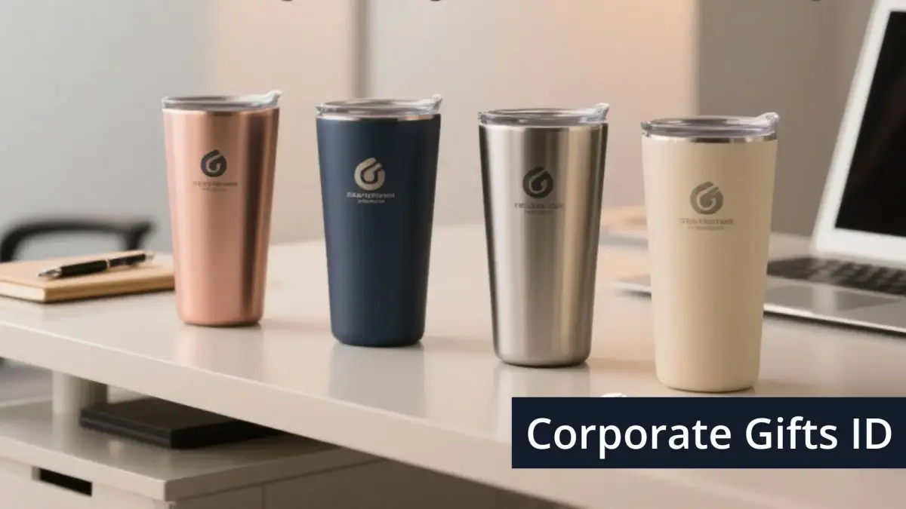

Corporate Gifts ID - Souvenir tumbler kantor premium dengan custom grafir logo adalah salah satu cinderamata korporat paling bernilai guna tinggi yang mampu menjangkau karyawan internal, klien prioritas, hingga tamu kehormatan konferensi. Botol minum berbahan baja tahan karat (stainless steel) bukan hanya sekadar sarana promosi, melainkan representasi komitmen perusahaan terhadap gaya hidup sehat dan kelestarian lingkungan hidup bebas sampah plastik sekali pakai.
Melalui teknologi laser grafir presisi tinggi, logo institusi diukir secara permanen pada permukaan botol, menghasilkan tampilan elegan tanpa khawatir warna luntur atau terkelupas setelah dicuci berulang kali.
Poin Kunci Keunggulan Tumbler Kantor Grafir:
- Brand Exposure Berkelanjutan: Tumbler selalu berada di meja kerja kantor, ruang rapat, hingga kendaraan selama aktivitas harian.
- Material Food Grade SUS 304: Tabung dalam tahan karat, bebas BPA, serta menjaga rasa asli air tanpa kontaminasi kimia.
- Efisiensi Termal Superior: Teknologi double wall vacuum insulation menahan panas atau dingin hingga 12-24 jam.
- Kustomisasi Logo Permanen: Grafir laser fiber tidak luntur terkena sabun cuci piring maupun gesekan pemakaian harian.
Mengapa Tumbler Grafir Logo Menjadi Pilihan Utama Corporate Gift?
Dalam strategi corporate gifting modern, perusahaan kini berfokus pada barang yang memiliki retention rate tinggi. Berdasarkan riset industri suvenir, lebih dari 85% penerima menyimpan botol minum tumbler lebih dari 12 bulan karena nilai manfaat fungsionalnya yang nyata.
Selain itu, penyediaan souvenir kantor tumbler custom juga memperkuat citra environmental, social, and governance (ESG) perusahaan dengan mendukung pengurangan botol kemasan plastik sekali pakai di area perkantoran.
5 Rekomendasi Souvenir Tumbler Kantor Premium
Berikut adalah lima model tumbler terbaik yang paling banyak dipilih korporasi dan instansi untuk paket suvenir eksklusif:
1. Tumbler Vacuum Flask Stainless Steel SUS 304 (500 ml)
Model klasik berbentuk silinder ramping dengan lapisan powder coating matte (hitam doff, putih, atau navy). Tabung dalam berbahan stainless steel SUS 304 double wall memastikan minuman kopi tetap panas dan air es tetap dingin selama lebih dari 12 jam.

Detail ukiran laser grafir yang presisi dan tidak luntur pada bodi tumbler stainless steel.
2. Smart Tumbler dengan Indikator Suhu LED Digital
Dilengkapi sensor sentuh layar LED pada tutup botol yang menampilkan temperatur cairan di dalamnya secara real-time. Sangat disukai peserta seminar dan karyawan muda karena sentuhan teknologinya yang futuristik dan modern.
3. Tumbler Lapisan Bambu Alami Ramah Lingkungan
Mengombinasikan tabung dalam stainless steel dengan lapisan luar kayu bambu alami yang estetik. Teknik grafir laser menghasilkan efek ukiran bakar alami yang sangat kontras dan artistik, cocok untuk tema go-green perusahaan.
4. Tumbler Model Desk Mug Gagang Ergonomis
Dirancang khusus untuk kenyamanan di meja kerja kantor dengan gagang ergonomis, tutup anti-tumpah, dan kapasitas lebar 350-400 ml yang memudahkan seduh teh atau kopi sachet tanpa perlu repot menuang.
5. Tumbler Sport & Travel dengan Handle Carabiner
Pilihan tepat untuk acara gathering perusahaan, team building, atau aktivitas luar ruangan. Dilengkapi tutup dengan pegangan kuat atau pengait carabiner yang praktis digantung di ransel kerja.
Tabel Spesifikasi dan Perbandingan Souvenir Tumbler
Berikut matriks perbandingan model tumbler kantor untuk mempermudah pemilihan sesuai skala acara dan target penerima:
| Model Tumbler | Material Tabung | Retensi Suhu | Karakter Desain & Sasaran |
|---|---|---|---|
| Vacuum Flask Klasik | Stainless SUS 304 Double Wall | 12 - 24 Jam | Minimalis elegan, cocok untuk seluruh karyawan & seminar kit |
| Smart LED Temp | SUS 304 + Touch Sensor LED | 8 - 12 Jam | Futuristik modern, ideal untuk gathering & onboarding kit |
| Eco Bamboo Flask | SUS 304 + Real Bamboo Shell | 8 - 12 Jam | Estetik natural, cocok untuk cinderamata VIP & mitra CSR |
| Office Desk Mug | SUS 304 + Gagang Ergonomis | 6 - 8 Jam | Fungsional meja kerja, favorit untuk hadiah apresiasi internal |
Keunggulan Teknik Cetak Grafir Laser Logo
Dibandingkan metode sablon manual, teknik laser engraving menawarkan presisi tingkat tinggi hingga detail terkecil pada tipografi logo perusahaan. Sinar laser mengikis lapisan terluar bodi botol dan memunculkan kilau perak stainless steel yang mewah di baliknya.
Selain itu, Anda dapat memadukan suvenir tumbler ini dengan produk pelengkap seperti notebook agenda kulit dan pulpen metal dalam satu paket seminar kit eksklusif atau hampers perusahaan.
Kesimpulan dan Konsultasi Pengadaan
Souvenir tumbler kantor premium dengan grafir laser adalah investasi branding bernilai jangka panjang yang memadukan estetika korporat, fungsi nyata, dan kepedulian lingkungan.
Konsultasikan kebutuhan tumbler promosi kantor Anda bersama tim spesialis CorporateGifts.ID. Dapatkan penawaran harga grosir terbaik dan simulasi mockup digital gratis melalui formulir permintaan penawaran harga hari ini juga.